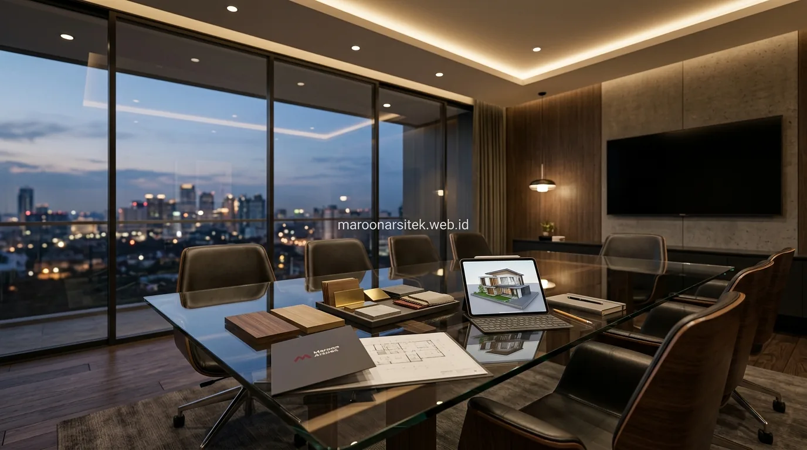

Membangun atau merenovasi rumah idaman memerlukan perencanaan matang agar anggaran konstruksi tidak membengkak di tengah jalan. Menggunakan layanan jasa arsitek profesional merupakan langkah strategis untuk mendapatkan denah yang fungsional, fasad yang estetik, dan dokumen gambar kerja teknis (DED) lengkap yang menjadi panduan akurat bagi pihak kontraktor pelaksana.
Skema Perhitungan Biaya Jasa Arsitek yang Umum Diterapkan
Skema perhitungan biaya jasa arsitek di Indonesia umumnya mengikuti salah satu dari tiga pendekatan berikut, dengan pemilihan skema disesuaikan dengan karakteristik proyek dan preferensi klien:
- Skema persentase dari RAB: Biaya jasa dihitung berdasarkan proporsi tertentu dari total estimasi biaya konstruksi (umumnya berkisar antara 3% hingga 8%). Besaran persentase ini mengacu pada pedoman standar asosiasi profesi arsitek di Indonesia, di mana persentasenya cenderung menurun seiring dengan semakin besarnya nilai anggaran proyek.
- Skema tarif per meter persegi (m²): Menghitung biaya berdasarkan total luas lantai bangunan yang direncanakan. Skema ini sangat populer karena memudahkan klien memperkirakan anggaran desain sejak awal secara praktis.
- Skema paket lump sum: Biaya perencanaan ditetapkan bernilai tetap di awal berdasarkan cakupan pekerjaan yang telah disepakati secara rinci, sangat cocok untuk proyek dengan batasan ruang yang sudah jelas tanpa banyak perubahan di tengah proses.
- Biaya konsultasi konsep awal: Diterapkan secara terpisah untuk tahap pembuatan sketsa gagasan atau layout 2D awal sebelum klien memutuskan untuk melanjutkan ke tahap penyusunan gambar kerja DED lengkap.
Pemilihan skema yang tepat sebaiknya didiskusikan secara terbuka di awal konsultasi agar Anda memahami rincian dokumen yang akan diterima, termasuk jumlah batas revisi desain yang tercakup dalam kontrak kerja.
Faktor yang Memengaruhi Besaran Biaya Jasa Arsitek Rumah
Besaran biaya jasa arsitek tidak seragam antar proyek karena dipengaruhi oleh beberapa faktor teknis dan non-teknis yang perlu dipahami sebelum membandingkan penawaran:
- Luas total bangunan: Semakin luas area bangunan yang dirancang, semakin banyak lembar dokumen gambar detail teknis (arsitektur, struktur, dan MEP) yang harus disiapkan oleh tim arsitek.
- Tingkat kompleksitas desain: Desain rumah mewah dengan bentang balok lebar, fasad dinamis, kantilever panjang, atau void tinggi membutuhkan analisis struktur yang jauh lebih mendalam dibanding rumah berbentuk kubus sederhana.
- Cakupan layanan: Apakah paket hanya mencakup konsep gambar kerja perizinan (PBG), gambar 3D fotorealistis, atau mencakup pengawasan berkala (*site supervision*) selama proses pembangunan berlangsung.
- Kondisi lahan dan topografi: Lahan miring di lereng bukit atau tanah berkontur memerlukan pengukuran elevasi khusus dan desain dinding penahan tanah (*retaining wall*) yang lebih detail.
- Batas jumlah revisi desain: Kesepakatan jumlah revisi pada tahap denah dan visual 3D memengaruhi alokasi jam kerja tim arsitek.

Simulasi Kebutuhan Biaya Berdasarkan Skala Proyek Rumah
Skala proyek rumah turut menentukan pendekatan perhitungan biaya jasa arsitek yang paling proporsional:
- Rumah Sederhana / Tipe Standar: Rumah 1 atau 2 lantai dengan denah simetris dan luas terbatas umumnya menggunakan skema tarif per m² karena kompleksitas gambar kerja relatif standar.
- Rumah Mewah / Desain Kustom: Rumah dengan banyak bukaan kaca besar, material batu alam khusus, dan tata ruang terbuka (*open-plan*) lebih sesuai menggunakan skema persentase dari RAB agar seluruh detail kustom terakomodasi sempurna.
- Proyek Renovasi Rumah Lama: Renovasi fasad atau perombakan tata ruang eksisting dapat memanfaatkan skema lump sum untuk kepastian biaya di awal, seperti yang dibahas pada panduan jasa renovasi rumah Jakarta.
- Layanan Pengawasan Berkala: Untuk memastikan kontraktor bekerja sesuai gambar kerja DED, klien dapat menambahkan paket kunjungan lapangan rutin oleh arsitek selama masa konstruksi.
Perbedaan Cakupan Layanan yang Memengaruhi Nilai Investasi Jasa Arsitek
Nilai investasi jasa arsitek tidak hanya diukur dari angka nominal biaya semata, melainkan dari kelengkapan dokumen yang Anda terima:
- Kelengkapan Gambar Kerja (DED): Meliputi denah arsitektur, gambar tampak, potongan melintang, rencana pondasi & kolom struktur, denah instalasi listrik, titik lampu, serta jalur pipa air bersih dan kotor.
- Rencana Anggaran Biaya (RAB) Rinci: Berisi daftar volume pekerjaan, spesifikasi material, dan estimasi harga satuan yang menjadi acuan tender kontraktor pelaksana.
- Visualisasi 3D Fotorealistis: Gambar perspektif 3D eksterior dan interior dengan pencahayaan realistis agar Anda memiliki gambaran jelas sebelum rumah dibangun.
- Pendampingan Teknis Pra-Konstruksi: Arsitek membantu menjelaskan detail teknis kepada kontraktor agar tidak terjadi salah tafsir di lapangan.
Cara Mendapatkan Estimasi Biaya Jasa Arsitek yang Akurat
Untuk mendapatkan estimasi biaya yang presisi dan transparan dari arsitek, langkah-langkah berikut sangat disarankan:
- Siapkan Data Luas Lahan & Kebutuhan Ruang: Catat ukuran panjang dan lebar tanah, jumlah anggota keluarga, jumlah kamar tidur, serta kebutuhan khusus seperti garasi atau rooftop.
- Tentukan Preferensi Gaya Desain: Kumpulkan referensi visual (minimalis modern, klasik tropis, skandinavia, atau industrial) untuk memudahkan arsitek memperkirakan kompleksitasnya.
- Diskusikan Batasan Anggaran Secara Terbuka: Keterbukaan anggaran di awal membantu arsitek merancang konsep bangunan yang realistis dan dapat dibangun sesuai kemampuan finansial Anda.
- Minta Rincian Kontrak Kerja Tertulis: Pastikan dokumen kontrak memuat jadwal pengerjaan (*timeline*), termin pembayaran, batasan revisi, dan daftar dokumen akhir yang diserahkan.
Kesalahan Umum Klien Saat Membandingkan Biaya Jasa Arsitek
Beberapa kekeliruan yang sering terjadi saat calon klien memilih jasa arsitek antara lain:
- Hanya Tergiur Tarif Paling Murah: Tarif yang terlampau murah sering kali hanya memberikan denah sederhana tanpa gambar detail teknis struktur dan MEP, sehingga kontraktor kebingungan saat membangun.
- Tidak Menanyakan Batasan Revisi: Tidak memastikan batas revisi di awal dapat menimbulkan biaya tak terduga saat Anda ingin mengubah tata letak ruang.
- Mengabaikan Portofolio Asli: Memilih arsitek tanpa melihat bukti karya nyata dan rekam jejak proyek yang pernah terbangun.
Hubungan Antara Biaya Jasa Arsitek dan Total Biaya Pembangunan
Biaya jasa arsitek sejatinya hanya berkisar 3% hingga 6% dari total nilai konstruksi rumah, namun perannya sangat krusial dalam menyelamatkan sisa 94%–97% anggaran bangunan Anda. Perencanaan arsitektur yang matang mencegah kesalahan struktur, mengoptimalkan pencahayaan alami untuk hemat energi, dan meminimalisir pemborosan material saat proses konstruksi berlangsung bersama tim kontraktor rumah.